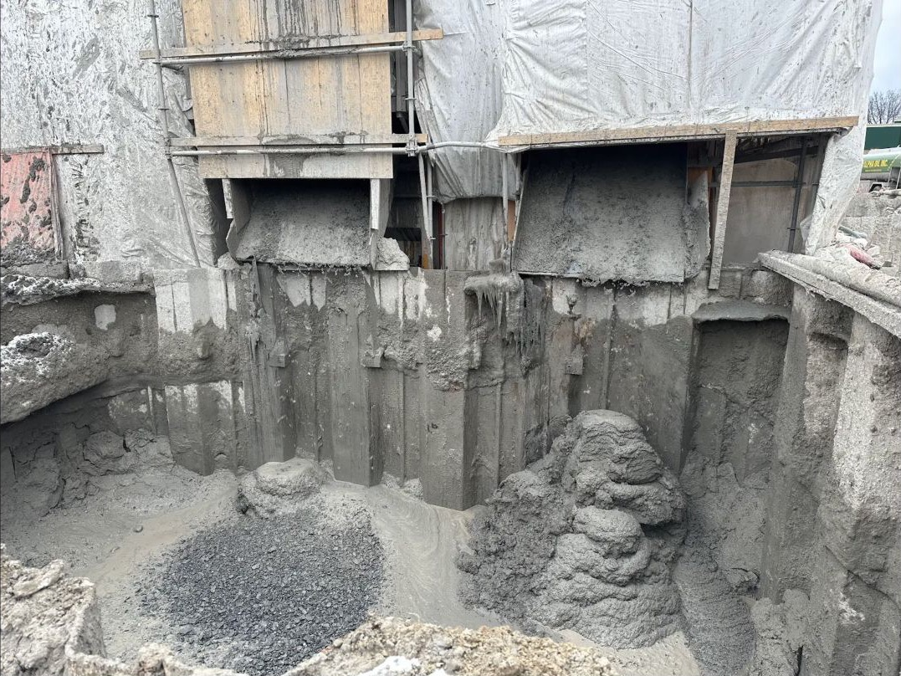

01 / Context
Coordinating below-grade work in a constrained urban site
Pape Station required multiple interacting foundation and support-of-excavation systems to be built in a live urban environment. Diaphragm-wall work, caissons, soldier-pile-and-lagging systems, piles, slurry operations, and concrete placement each brought their own drawings, submittals, tests, trades, and hold points.
The useful engineering work was often at the interfaces: connecting a field question to the governing detail, identifying who owned the response, and making sure the answer returned to the workface with a record behind it.
02 / My role
Field-to-document coordination
I supported construction coordination and technical follow-through for the deep-foundation and excavation-support scope. My role sat between drawings and submittals, subcontractor questions, testing activities, quantities, and what was physically happening on site.
Responsibility boundary: this was a coordination and field-delivery role. The temporary-works and foundation design are not attributed to me.
03 / What I did
Kept technical questions connected to construction
- Prepared and tracked RFIs, RFQs, and submittals, tying open questions back to relevant drawings, specifications, and upcoming work.
- Supported coordination for driven piles, soldier-pile-and-lagging systems, secant and drilled caissons, diaphragm-wall operations, slurry handling, and tremie concrete placement.
- Followed foundation and geotechnical testing—including O-cell activities—and organized observations, photographs, and supporting records.
- Assisted with quantities, subcontractor schedule context, invoicing support, and as-built information so commercial and field records described the same scope.
04 / Approach
A closed loop from question to evidence
- Ground the issue. Start with the current drawing, specification, submittal, or field condition rather than an isolated message.
- Map the interface. Identify the affected activity, responsible party, sequence constraint, and decision deadline.
- Follow it into the field. Check the response against actual work, testing, and access conditions; capture concise evidence.
- Close the record. Return the resolution to the project register and retain what is needed for quantities, as-builts, and review.
05 / Construction detail
Inside the excavation sequence
A closer field view complements the equipment image with the physical condition being coordinated and recorded.

06 / Outcome
More traceable field delivery
The work helped keep technical queries, testing evidence, and construction records aligned with rapidly changing site activities. It also gave me a practical understanding of how foundation systems are sequenced, inspected, documented, and handed from one trade to the next.
No production rate, cost saving, or design-performance result is claimed because the available record does not isolate those outcomes to my work.